Examples from the documentation¶
Below are all the examples that are part of the lmfit documentation.


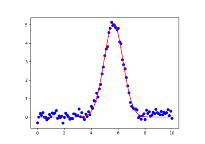
doc_model_loadmodelresult.py

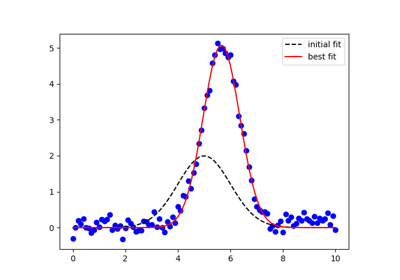
doc_model_gaussian.py
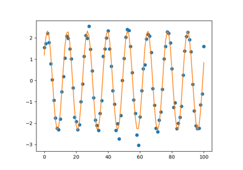
doc_model_loadmodel.py
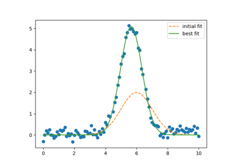
doc_model_with_nan_policy.py
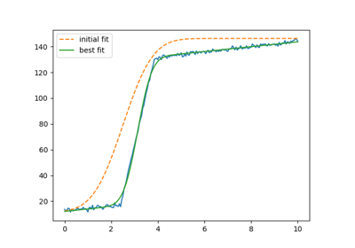
doc_builtinmodels_stepmodel.py
doc_builtinmodels_stepmodel.py
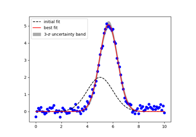
doc_model_uncertainty.py


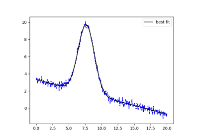
doc_model_with_iter_callback.py
doc_model_with_iter_callback.py
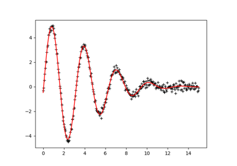
doc_parameters_valuesdict.py
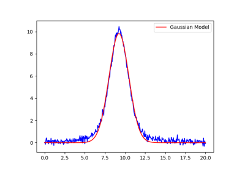
doc_builtinmodels_peakmodels.py
doc_builtinmodels_peakmodels.py
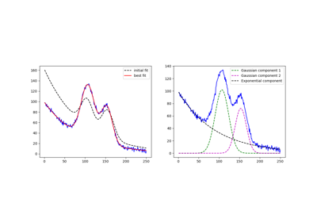
doc_builtinmodels_nistgauss.py
doc_builtinmodels_nistgauss.py

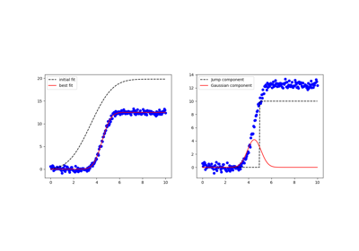
doc_model_composite.py

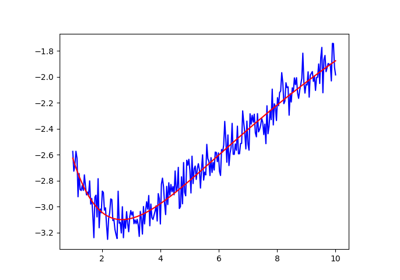
doc_confidence_advanced.py
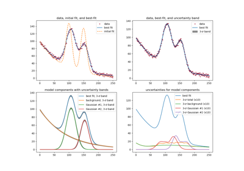
doc_model_uncertainty2.py
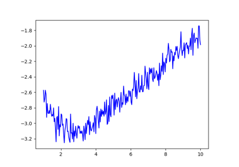
doc_fitting_emcee.py
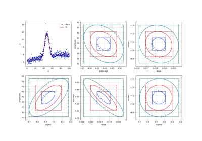
doc_confidence_chi2_maps.py